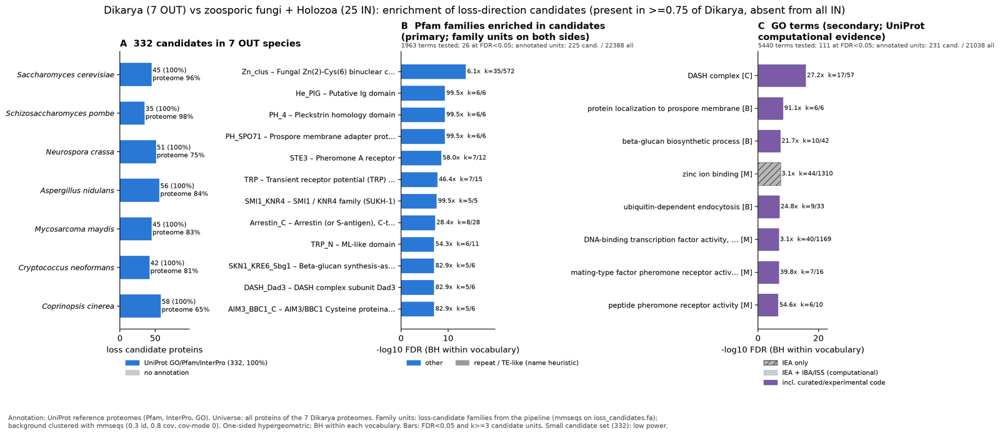

zoosporic holozoa vs dikarya: functional enrichment (loss)
One-sided hypergeometric test per term; Benjamini-Hochberg FDR within each scope, level and vocabulary. Candidates are the loss candidates: gene families present in the OUT group and absent from the IN group. Universe: proteome. Background clustered: True (58270 sequences in 35928 clusters, mmseqs easy-cluster --min-seq-id 0.3 -c 0.8). Family level: one unit per candidate family and per background cluster.
Sources: Pfam: 2026-01-27-Pfam38.2; InterPro entries: 110.0; GO: releases/2026-07-26; analysis generated 2026-10-12T17:25:20. Source tables: studies/eukaryotes/zoosporic_holozoa_vs_dikarya/analysis/enrichment/outputs/loss/proteome_clustered.
Full record: PROVENANCE. Run report: report.html.
- Annotation provenance is not fully recorded: PROVENANCE.yaml lists the per-species annotation files and their checksums, but not the UniProt release they come from.
- GO results are secondary. GO annotations include computational evidence (IEA, IBA); the GO evidence column shows if a term has non-IEA support.
- Candidate families (pipeline clustering of candidates) and background clusters (mmseqs clustering of the background proteome) are made by different runs, so family-level counts are not fully comparable.
Summary figure

Annotation coverage
Fraction of proteins with at least one term per vocabulary. Universe = all proteins of the species; candidates = the candidate set.
| Species | Set | Proteins | Pfam | Pfam clan | InterPro | GO | Any |
|---|---|---|---|---|---|---|---|
| Sacccere | universe | 6066 | 88.6% | 66.3% | 90.9% | 94.8% | 96.4% |
| Sacccere | candidates | 45 | 91.1% | 57.8% | 97.8% | 100.0% | 100.0% |
| Schipomb | universe | 5129 | 89.7% | 69.8% | 91.7% | 97.7% | 98.1% |
| Schipomb | candidates | 35 | 94.3% | 60.0% | 100.0% | 100.0% | 100.0% |
| Neurcras | universe | 9759 | 69.3% | 54.9% | 73.9% | 62.6% | 74.6% |
| Neurcras | candidates | 51 | 84.3% | 51.0% | 98.0% | 86.3% | 100.0% |
| Aspenidu | universe | 10561 | 78.2% | 64.8% | 83.1% | 71.4% | 83.7% |
| Aspenidu | candidates | 56 | 89.3% | 67.9% | 100.0% | 89.3% | 100.0% |
| Mycomayd | universe | 6788 | 77.0% | 62.2% | 82.2% | 73.8% | 82.7% |
| Mycomayd | candidates | 45 | 93.3% | 48.9% | 97.8% | 88.9% | 100.0% |
| Crypneof | universe | 6965 | 75.8% | 61.7% | 81.0% | 71.3% | 81.3% |
| Crypneof | candidates | 42 | 95.2% | 71.4% | 100.0% | 88.1% | 100.0% |
| Coprcine | universe | 13334 | 58.5% | 47.3% | 64.8% | 47.5% | 64.9% |
| Coprcine | candidates | 58 | 93.1% | 65.5% | 100.0% | 86.2% | 100.0% |
| ALL_OUT | universe | 58602 | 73.9% | 59.1% | 78.6% | 69.5% | 80.1% |
| ALL_OUT | candidates | 332 | 91.3% | 60.5% | 99.1% | 90.7% | 100.0% |
Tests summary
Per vocabulary: terms with FDR < 0.05 / terms tested. Protein level counts proteins; family level counts candidate families and background clusters.
| Scope | Level | Cand. units | Pfam sig / tested | Pfam clan sig / tested | InterPro sig / tested | GO sig / tested |
|---|---|---|---|---|---|---|
| whole_set | family | 248 | 26 / 1963 | 12 / 406 | 49 / 3927 | 111 / 5440 |
| whole_set | protein | 332 | 39 / 4100 | 14 / 497 | 67 / 8815 | 151 / 7185 |
| Aspenidu | family | 56 | 2 / 350 | 2 / 240 | 3 / 840 | 8 / 2713 |
| Aspenidu | protein | 56 | 2 / 464 | 2 / 256 | 3 / 1090 | 14 / 2883 |
| Coprcine | family | 48 | 1 / 310 | 5 / 226 | 2 / 763 | 20 / 2290 |
| Coprcine | protein | 58 | 2 / 438 | 5 / 242 | 4 / 1041 | 29 / 2420 |
| Crypneof | family | 37 | 1 / 221 | 3 / 191 | 2 / 587 | 17 / 1886 |
| Crypneof | protein | 42 | 3 / 271 | 4 / 205 | 6 / 714 | 36 / 1989 |
| Mycomayd | family | 40 | 0 / 231 | 0 / 201 | 0 / 619 | 8 / 2249 |
| Mycomayd | protein | 45 | 1 / 268 | 1 / 209 | 3 / 703 | 24 / 2328 |
| Neurcras | family | 50 | 1 / 299 | 2 / 240 | 2 / 754 | 7 / 2539 |
| Neurcras | protein | 51 | 3 / 367 | 2 / 246 | 5 / 908 | 9 / 2632 |
| Sacccere | family | 42 | 0 / 171 | 1 / 175 | 0 / 489 | 0 / 3447 |
| Sacccere | protein | 45 | 1 / 269 | 4 / 200 | 3 / 711 | 0 / 3712 |
| Schipomb | family | 31 | 0 / 157 | 0 / 169 | 0 / 457 | 0 / 3006 |
| Schipomb | protein | 35 | 1 / 220 | 0 / 180 | 2 / 598 | 6 / 3161 |
Top 25 Pfam terms (whole set, family level)
25 rows shown, ordered by FDR then p-value; 25 have FDR < 0.05 (bold).
| Term | Name | k / N cand. | n / M bg | Fold | FDR (BH) |
|---|---|---|---|---|---|
| PF00172 | Zn_clus: Fungal Zn(2)-Cys(6) binuclear cluster domain | 35 / 225 | 572 / 22388 | 6.088 | 1.77e-14 |
| PF05345 | He_PIG: Putative Ig domain | 6 / 225 | 6 / 22388 | 99.502 | 4.73e-10 |
| PF15404 | PH_4: Pleckstrin homology domain | 6 / 225 | 6 / 22388 | 99.502 | 4.73e-10 |
| PF23207 | PH_SPO71: Prospore membrane adapter protein SPO71 PH domain | 6 / 225 | 6 / 22388 | 99.502 | 4.73e-10 |
| PF02076 | STE3: Pheromone A receptor | 7 / 225 | 12 / 22388 | 58.043 | 2.81e-09 |
| PF06011 | TRP: Transient receptor potential (TRP) ion channel | 7 / 225 | 15 / 22388 | 46.434 | 1.85e-08 |
| PF09346 | SMI1_KNR4: SMI1 / KNR4 family (SUKH-1) | 5 / 225 | 5 / 22388 | 99.502 | 2.75e-08 |
| PF02752 | Arrestin_C: Arrestin (or S-antigen), C-terminal domain | 8 / 225 | 28 / 22388 | 28.429 | 5.89e-08 |
| PF14558 | TRP_N: ML-like domain | 6 / 225 | 11 / 22388 | 54.274 | 9.31e-08 |
| PF03935 | SKN1_KRE6_Sbg1: Beta-glucan synthesis-associated protein SKN1/KRE6/Sbg1 | 5 / 225 | 6 / 22388 | 82.919 | 9.55e-08 |
| PF08656 | DASH_Dad3: DASH complex subunit Dad3 | 5 / 225 | 6 / 22388 | 82.919 | 9.55e-08 |
| PF25459 | AIM3_BBC1_C: AIM3/BBC1 Cysteine proteinase-fold domain | 5 / 225 | 6 / 22388 | 82.919 | 9.55e-08 |
| PF00339 | Arrestin_N: Arrestin (or S-antigen), N-terminal domain | 7 / 225 | 22 / 22388 | 31.66 | 2.14e-07 |
| PF04082 | Fungal_trans: Fungal specific transcription factor domain | 20 / 225 | 380 / 22388 | 5.237 | 2.65e-07 |
| PF19117 | Mim2: Mitochondrial import 2 | 5 / 225 | 7 / 22388 | 71.073 | 2.65e-07 |
| PF11951 | Fungal_trans_2: Fungal specific transcription factor domain | 11 / 225 | 101 / 22388 | 10.837 | 7.30e-07 |
| PF03595 | SLAC1: Voltage-dependent anion channel | 5 / 225 | 13 / 22388 | 38.27 | 1.36e-05 |
| PF08552 | Kei1: Inositolphosphorylceramide synthase subunit Kei1 | 4 / 225 | 6 / 22388 | 66.335 | 1.60e-05 |
| PF08229 | SHR3_chaperone: ER membrane protein SH3 | 4 / 225 | 7 / 22388 | 56.858 | 3.51e-05 |
| PF08316 | Pal1: Pal1 cell morphology protein | 4 / 225 | 10 / 22388 | 39.801 | 1.95e-04 |
| PF06371 | Drf_GBD: Diaphanous GTPase-binding Domain | 4 / 225 | 13 / 22388 | 30.616 | 6.18e-04 |
| PF08219 | TOM13: Outer membrane protein TOM13 | 3 / 225 | 6 / 22388 | 49.751 | 0.002 |
| PF08653 | DASH_Dam1: DASH complex subunit Dam1 | 3 / 225 | 6 / 22388 | 49.751 | 0.002 |
| PF08655 | DASH_Ask1: DASH complex subunit Ask1 | 3 / 225 | 6 / 22388 | 49.751 | 0.002 |
| PF08649 | DASH_Dad1: DASH complex subunit Dad1 | 3 / 225 | 7 / 22388 | 42.644 | 0.003 |
Top 25 InterPro terms (whole set, family level)
25 rows shown, ordered by FDR then p-value; 25 have FDR < 0.05 (bold).
| Term | Name | k / N cand. | n / M bg | Fold | FDR (BH) |
|---|---|---|---|---|---|
| IPR036864 | Homologous_superfamily:Zn(2)-C6 fungal-type DNA-binding domain superfamily | 37 / 245 | 661 / 24571 | 5.614 | 5.76e-14 |
| IPR001138 | Domain:Zn(2)Cys(6) fungal-type DNA-binding domain | 37 / 245 | 673 / 24571 | 5.514 | 5.76e-14 |
| IPR006644 | Domain:Dystroglycan-type cadherin-like | 6 / 245 | 6 / 24571 | 100.29 | 6.05e-10 |
| IPR039486 | Domain:Mug56/Spo71, PH domain | 6 / 245 | 6 / 24571 | 100.29 | 6.05e-10 |
| IPR040345 | Family:Mug56/Spo71 | 6 / 245 | 6 / 24571 | 100.29 | 6.05e-10 |
| IPR057379 | Domain:Prospore membrane adapter protein SPO71, PH domain | 6 / 245 | 6 / 24571 | 100.29 | 6.05e-10 |
| IPR050357 | Family:Arrestin domain-containing protein | 9 / 245 | 28 / 24571 | 32.236 | 2.76e-09 |
| IPR001499 | Family:GPCR fungal pheromone mating factor, STE3 | 7 / 245 | 12 / 24571 | 58.502 | 3.35e-09 |
| IPR011022 | Domain:Arrestin-like, C-terminal domain | 9 / 245 | 31 / 24571 | 29.116 | 5.76e-09 |
| IPR032800 | Domain:ML-like domain | 7 / 245 | 13 / 24571 | 54.002 | 5.76e-09 |
| IPR015919 | Homologous_superfamily:Cadherin-like superfamily | 6 / 245 | 8 / 24571 | 75.217 | 9.09e-09 |
| IPR010308 | Domain:TRP, C-terminal | 7 / 245 | 15 / 24571 | 46.802 | 1.77e-08 |
| IPR018958 | Domain:Knr4/Smi1-like domain | 5 / 245 | 5 / 24571 | 100.29 | 2.34e-08 |
| IPR037883 | Homologous_superfamily:Knr4/Smi1-like domain superfamily | 5 / 245 | 5 / 24571 | 100.29 | 2.34e-08 |
| IPR051873 | Family:Cell wall assembly regulator KNR4/SMI1 | 5 / 245 | 5 / 24571 | 100.29 | 2.34e-08 |
| IPR040241 | Family:Transient receptor potential channel Flc/Pkd2-like | 7 / 245 | 16 / 24571 | 43.877 | 2.34e-08 |
| IPR007219 | Domain:Xylanolytic transcriptional activator-like, regulatory domain | 21 / 245 | 391 / 24571 | 5.386 | 1.09e-07 |
| IPR005629 | Family:Beta-glucan synthesis-associated protein Skn1/Kre6/Sbg1 | 5 / 245 | 6 / 24571 | 83.575 | 1.11e-07 |
| IPR013965 | Family:DASH complex subunit Dad3 | 5 / 245 | 6 / 24571 | 83.575 | 1.11e-07 |
| IPR057402 | Domain:BBC1/AIM3, cysteine proteinase-fold domain | 5 / 245 | 6 / 24571 | 83.575 | 1.11e-07 |
| IPR011021 | Domain:Arrestin-like, N-terminal | 7 / 245 | 22 / 24571 | 31.91 | 2.53e-07 |
| IPR037652 | Family:Mim2 | 5 / 245 | 7 / 24571 | 71.636 | 3.49e-07 |
| IPR021858 | Family:Fungal transcription factor | 11 / 245 | 101 / 24571 | 10.923 | 9.54e-07 |
| IPR014752 | Homologous_superfamily:Arrestin-like, C-terminal domain superfamily | 9 / 245 | 60 / 24571 | 15.043 | 1.31e-06 |
| IPR004695 | Family:Transporter protein SLAC1/Mae1/ Ssu1/TehA | 5 / 245 | 13 / 24571 | 38.573 | 1.72e-05 |
Top 15 GO terms (whole set, family level) — secondary, computational evidence (IEA/IBA) included
15 rows shown, ordered by FDR then p-value; 15 have FDR < 0.05 (bold).
| Term | Name | k / N cand. | n / M bg | Fold | FDR (BH) | GO evidence | Families with non-IEA |
|---|---|---|---|---|---|---|---|
| GO:0042729 | cellular_component:DASH complex | 17 / 231 | 57 / 21038 | 27.162 | 1.39e-16 | has_non_IEA | 14 |
| GO:1902657 | biological_process:protein localization to prospore membrane | 6 / 231 | 6 / 21038 | 91.074 | 4.47e-09 | has_non_IEA | 4 |
| GO:0051274 | biological_process:beta-glucan biosynthetic process | 10 / 231 | 42 / 21038 | 21.684 | 3.28e-08 | has_non_IEA | 6 |
| GO:0008270 | molecular_function:zinc ion binding | 44 / 231 | 1310 / 21038 | 3.059 | 3.28e-08 | IEA_only | 0 |
| GO:0070086 | biological_process:ubiquitin-dependent endocytosis | 9 / 231 | 33 / 21038 | 24.838 | 6.62e-08 | has_non_IEA | 5 |
| GO:0000981 | molecular_function:DNA-binding transcription factor activity, RNA polymerase II-specific | 40 / 231 | 1169 / 21038 | 3.116 | 1.12e-07 | has_non_IEA | 14 |
| GO:0004932 | molecular_function:mating-type factor pheromone receptor activity | 7 / 231 | 16 / 21038 | 39.845 | 1.12e-07 | has_non_IEA | 4 |
| GO:0008528 | molecular_function:G protein-coupled peptide receptor activity | 7 / 231 | 16 / 21038 | 39.845 | 1.12e-07 | has_non_IEA | 4 |
| GO:0016503 | molecular_function:pheromone receptor activity | 7 / 231 | 16 / 21038 | 39.845 | 1.12e-07 | has_non_IEA | 4 |
| GO:0036318 | molecular_function:peptide pheromone receptor activity | 6 / 231 | 10 / 21038 | 54.644 | 1.81e-07 | has_non_IEA | 2 |
| GO:0016020 | cellular_component:membrane | 103 / 231 | 5425 / 21038 | 1.729 | 1.98e-07 | has_non_IEA | 57 |
| GO:0001653 | molecular_function:peptide receptor activity | 7 / 231 | 18 / 21038 | 35.418 | 2.29e-07 | has_non_IEA | 4 |
| GO:0009250 | biological_process:glucan biosynthetic process | 10 / 231 | 58 / 21038 | 15.702 | 2.89e-07 | has_non_IEA | 6 |
| GO:0051273 | biological_process:beta-glucan metabolic process | 10 / 231 | 66 / 21038 | 13.799 | 1.00e-06 | has_non_IEA | 6 |
| GO:0046872 | molecular_function:metal ion binding | 54 / 231 | 2123 / 21038 | 2.317 | 1.06e-06 | has_non_IEA | 1 |
Actin cytoskeleton controls
Known actin-related families and how many of their proteins pass each filter. Protein ID columns are left out.
| control | pfam_ids | desc_regex | OUT_universe | OUT_in_matrix | OUT_pass_outgroup_rule | candidates | near_miss_in1 | near_miss_in2 | n_Sacccere | n_Schipomb | n_Neurcras | n_Aspenidu | n_Mycomayd | n_Crypneof | n_Coprcine | n_Monobrev | n_Salprose | n_Capsowcz | n_Sphaarct | n_Amphquee | n_Tricadha | n_Nemavect | n_Mnemleid | n_Caeneleg | n_Drosmela | n_Homosapi | n_Batrdend | n_Batrsala | n_Spizpunc | n_Powehirt | n_Geravari | n_Syncendo | n_Syncmicr | n_Chytconf | n_Polystew | n_Rhizglob | n_Rhizrose | n_Cateangu | n_Allomacr | n_Pirofinn |
|---|---|---|---|---|---|---|---|---|---|---|---|---|---|---|---|---|---|---|---|---|---|---|---|---|---|---|---|---|---|---|---|---|---|---|---|---|---|---|---|---|
| Arp2/3 ARPC2 (P34-Arc) | PF04045 | 7 | 7 | 7 | 0 | 0 | 0 | 1 | 1 | 1 | 1 | 1 | 1 | 1 | 1 | 1 | 1 | 1 | 1 | 1 | 1 | 1 | 1 | 1 | 1 | 1 | 1 | 1 | 1 | 1 | 1 | 1 | 1 | 1 | 1 | 1 | 1 | 2 | 1 | |
| Arp2/3 ARPC3 (P21-Arc) | PF04062 | 7 | 7 | 7 | 0 | 0 | 0 | 1 | 1 | 1 | 1 | 1 | 1 | 1 | 1 | 1 | 1 | 1 | 1 | 1 | 1 | 1 | 1 | 2 | 1 | 1 | 1 | 1 | 1 | 1 | 1 | 1 | 1 | 1 | 1 | 1 | 1 | 2 | 1 | |
| Arp2/3 ARPC4 | PF05856 | 7 | 7 | 7 | 0 | 0 | 0 | 1 | 1 | 1 | 1 | 1 | 1 | 1 | 1 | 1 | 1 | 1 | 1 | 1 | 1 | 1 | 1 | 1 | 1 | 1 | 1 | 1 | 1 | 1 | 1 | 1 | 1 | 1 | 1 | 1 | 1 | 1 | 1 | |
| Arp2/3 ARPC5 (P16-Arc) | PF04699 | 7 | 7 | 7 | 0 | 0 | 0 | 1 | 1 | 1 | 1 | 1 | 1 | 1 | 0 | 1 | 1 | 1 | 1 | 1 | 1 | 1 | 2 | 1 | 2 | 1 | 1 | 1 | 1 | 1 | 1 | 1 | 2 | 1 | 1 | 1 | 1 | 2 | 1 | |
| Arp2/3 ARPC1 (description only) | arp2/3 complex.*(41|p41|subunit 1)|ARPC1 | 1 | 1 | 1 | 0 | 0 | 0 | 0 | 0 | 0 | 0 | 1 | 0 | 0 | 0 | 0 | 0 | 1 | 0 | 0 | 0 | 0 | 0 | 0 | 0 | 0 | 1 | 0 | 0 | 0 | 1 | 0 | 0 | 0 | 0 | 0 | 0 | 0 | 0 | |
| Arp2 / Arp3 (description only) | actin-related protein (2|3)\b|\bARP[23]\b | 44 | 44 | 44 | 0 | 0 | 0 | 7 | 7 | 6 | 7 | 7 | 5 | 5 | 5 | 6 | 5 | 5 | 6 | 6 | 7 | 6 | 8 | 8 | 11 | 6 | 7 | 6 | 7 | 6 | 7 | 6 | 6 | 8 | 5 | 6 | 7 | 13 | 6 | |
| WAVE complex NCKAP1 | PF09735 | 0 | 0 | 0 | 0 | 0 | 0 | 0 | 0 | 0 | 0 | 0 | 0 | 0 | 1 | 1 | 1 | 0 | 1 | 2 | 1 | 1 | 1 | 1 | 2 | 1 | 1 | 1 | 1 | 1 | 1 | 1 | 0 | 1 | 0 | 1 | 1 | 2 | 1 | |
| WAVE complex CYFIP (FragX_IP) | PF05994 | 0 | 0 | 0 | 0 | 0 | 0 | 0 | 0 | 0 | 0 | 0 | 0 | 0 | 1 | 2 | 1 | 0 | 5 | 1 | 1 | 1 | 1 | 1 | 2 | 1 | 1 | 1 | 1 | 1 | 1 | 1 | 0 | 1 | 0 | 1 | 1 | 4 | 1 | |
| WAVE complex ABI | PF07815|PF27594 | 0 | 0 | 0 | 0 | 0 | 0 | 0 | 0 | 0 | 0 | 0 | 0 | 0 | 0 | 1 | 1 | 0 | 1 | 1 | 3 | 1 | 1 | 1 | 3 | 0 | 0 | 0 | 0 | 0 | 0 | 0 | 0 | 0 | 0 | 0 | 0 | 0 | 0 | |
| SCAR/WAVE (SCAR_helical) | PF27569 | 0 | 0 | 0 | 0 | 0 | 0 | 0 | 0 | 0 | 0 | 0 | 0 | 0 | 1 | 2 | 1 | 0 | 2 | 1 | 1 | 3 | 1 | 1 | 3 | 1 | 1 | 1 | 1 | 1 | 1 | 1 | 0 | 1 | 0 | 1 | 1 | 0 | 1 | |
| WASP family (WH1) | PF00568 | 8 | 7 | 7 | 0 | 0 | 0 | 1 | 1 | 1 | 1 | 1 | 1 | 2 | 2 | 3 | 3 | 3 | 5 | 5 | 5 | 3 | 2 | 4 | 11 | 1 | 1 | 1 | 1 | 1 | 1 | 1 | 1 | 1 | 1 | 1 | 1 | 4 | 1 | |
| WH2 motif (WASP, WAVE, others) | PF02205 | 14 | 14 | 9 | 0 | 0 | 0 | 2 | 2 | 1 | 3 | 2 | 2 | 2 | 3 | 6 | 5 | 2 | 4 | 3 | 3 | 4 | 4 | 4 | 15 | 3 | 1 | 1 | 1 | 1 | 1 | 1 | 1 | 1 | 0 | 1 | 1 | 2 | 2 | |
| Formin FH2 | PF02181 | 12 | 12 | 9 | 0 | 0 | 0 | 2 | 3 | 1 | 1 | 2 | 1 | 2 | 8 | 8 | 6 | 8 | 12 | 4 | 11 | 8 | 7 | 6 | 15 | 4 | 6 | 4 | 4 | 4 | 3 | 4 | 5 | 6 | 5 | 5 | 3 | 9 | 7 | |
| Formin Drf_GBD / Drf_FH3 / Drf_DAD | PF06371|PF06367|PF06345 | 16 | 16 | 13 | 4 | 1 | 0 | 1 | 4 | 2 | 2 | 2 | 2 | 3 | 5 | 5 | 3 | 5 | 7 | 4 | 9 | 3 | 3 | 5 | 9 | 3 | 4 | 4 | 3 | 4 | 2 | 3 | 3 | 4 | 3 | 7 | 3 | 7 | 7 | |
| Ena/VASP (VASP_tetra) | PF08776 | 0 | 0 | 0 | 0 | 0 | 0 | 0 | 0 | 0 | 0 | 0 | 0 | 0 | 1 | 0 | 0 | 0 | 0 | 0 | 0 | 0 | 0 | 1 | 3 | 0 | 0 | 0 | 0 | 0 | 0 | 0 | 0 | 0 | 0 | 0 | 0 | 0 | 0 | |
| Coronin (description only) | coronin | 7 | 7 | 7 | 0 | 0 | 0 | 1 | 1 | 1 | 1 | 1 | 1 | 1 | 1 | 1 | 2 | 2 | 2 | 2 | 4 | 2 | 2 | 2 | 7 | 1 | 1 | 3 | 3 | 4 | 1 | 2 | 4 | 2 | 2 | 4 | 1 | 4 | 4 | |
| Cortactin (HS1_rep) | PF02218 | 0 | 0 | 0 | 0 | 0 | 0 | 0 | 0 | 0 | 0 | 0 | 0 | 0 | 1 | 1 | 1 | 0 | 1 | 1 | 1 | 1 | 0 | 1 | 2 | 0 | 0 | 0 | 0 | 0 | 0 | 0 | 0 | 0 | 0 | 0 | 1 | 0 | 0 | |
| Myosin 2 tail (Myosin_tail_1) | PF01576 | 1 | 1 | 1 | 0 | 0 | 0 | 0 | 0 | 0 | 0 | 0 | 0 | 1 | 1 | 1 | 3 | 1 | 3 | 0 | 2 | 6 | 8 | 4 | 19 | 1 | 1 | 1 | 1 | 1 | 1 | 1 | 1 | 1 | 1 | 2 | 0 | 1 | 2 | |
| Myosin head (all myosins) | PF00063 | 32 | 32 | 32 | 0 | 0 | 0 | 5 | 5 | 4 | 5 | 4 | 4 | 5 | 32 | 32 | 23 | 15 | 19 | 12 | 20 | 10 | 17 | 14 | 39 | 7 | 8 | 9 | 9 | 7 | 6 | 9 | 13 | 7 | 14 | 12 | 8 | 21 | 14 |
Page written by bin/generate_enrichment_page.py.